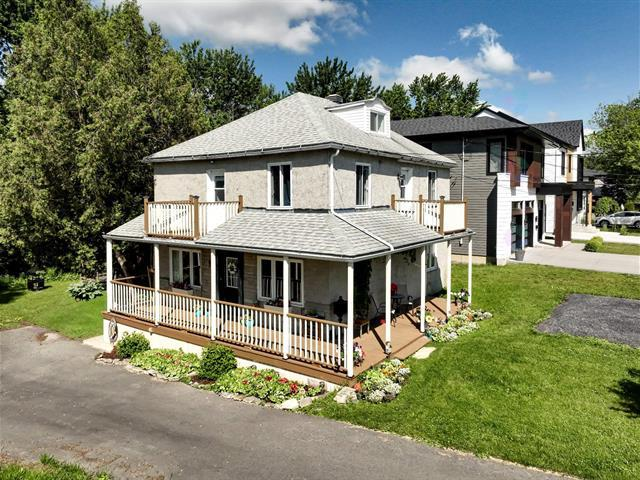

À vendreMaison à étages · Centris 13305206
812, rue
des Cèdres
Chambly, Québec
419 000 $
3chambres
2salles de bain
5 750pi² de terrain
La propriété
Une maison de caractère
près du bassin.
Sur l’île Demers, à quelques pas du bassin de Chambly, de la rivière L’Acadie et de la piste cyclable, cette maison détachée offre une base pleine de possibilités. Son terrain de 5 750 pi² et sa configuration de dix pièces conviennent autant à une rénovation inspirée qu’à un projet à repenser.
Caractéristiques
Tout ce qu’il faut savoir.
TypeMaison à étages détachée
Année de construction1949
Pièces10
Chambres3
Salles de bain2
Stationnement2 places dans l’allée
FoyerGaz
Occupation14 août 2026
Valeur et frais
Repères financiers.
Évaluation municipale 2026392 800 $
Taxes municipales 20262 224 $
Taxes scolaires 2025240 $
Location de propane150 $ / année
Localisation